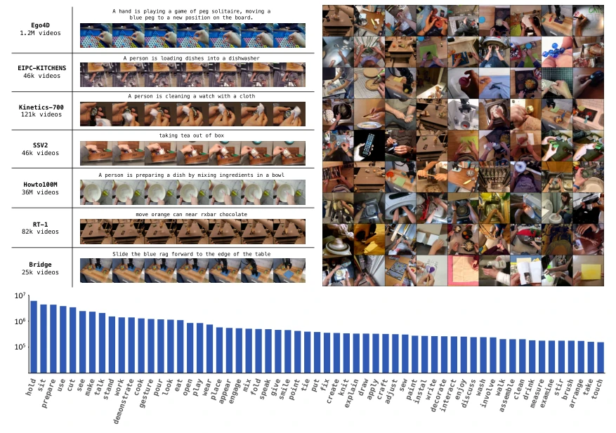
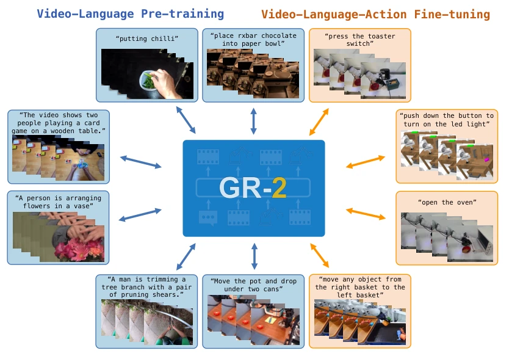
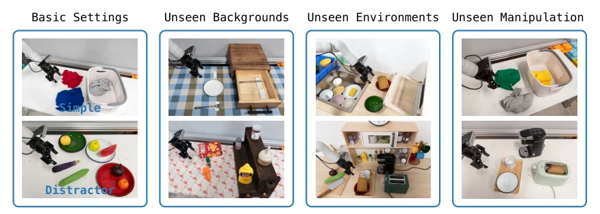
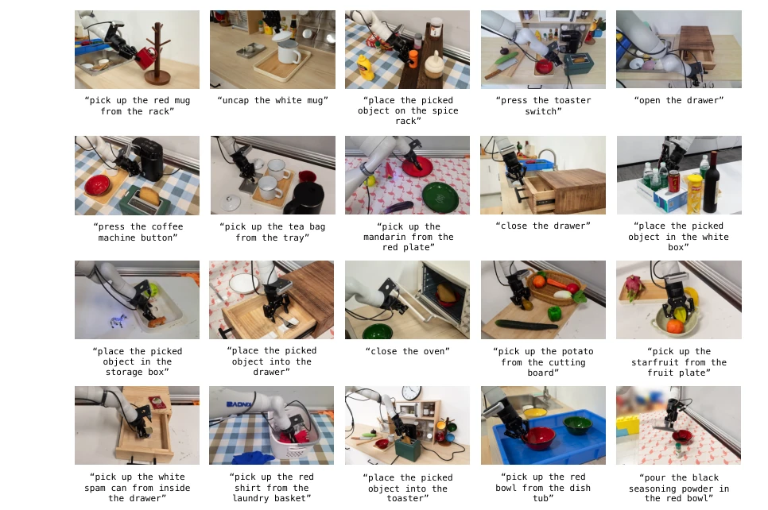
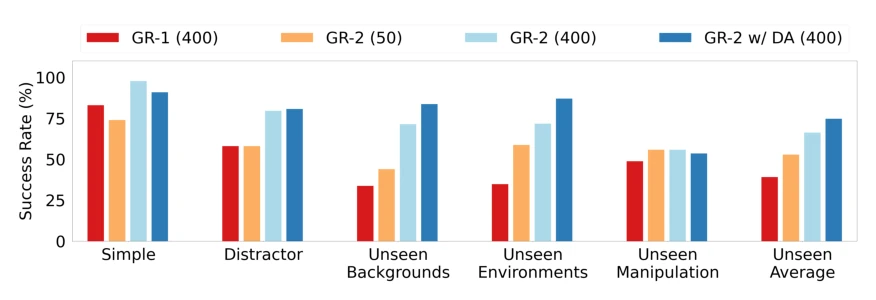
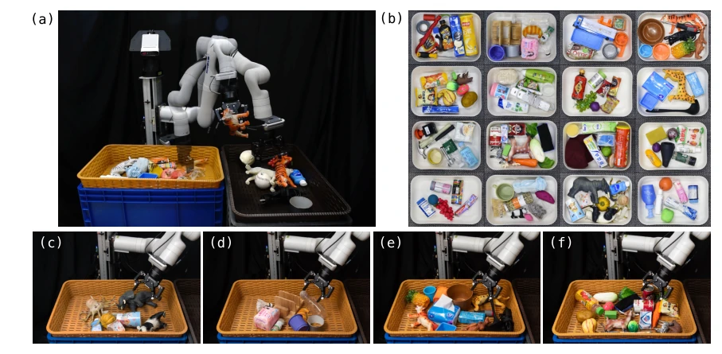
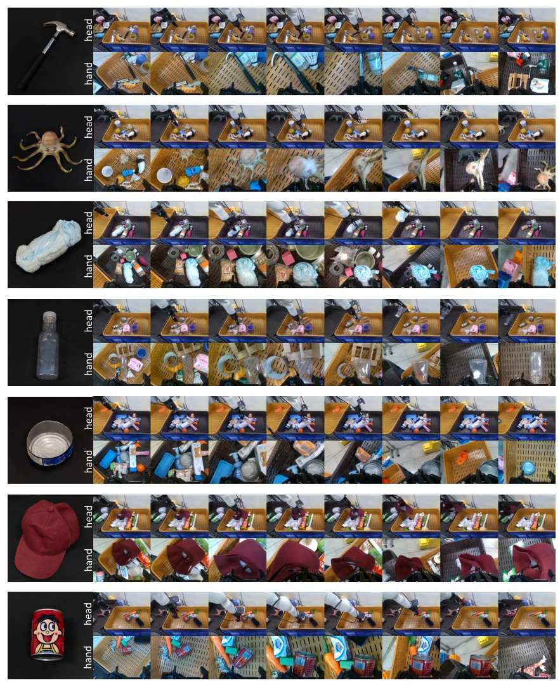
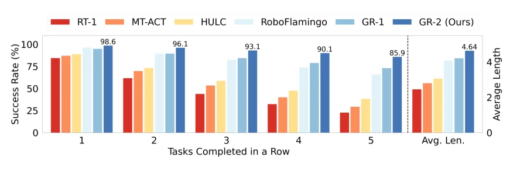
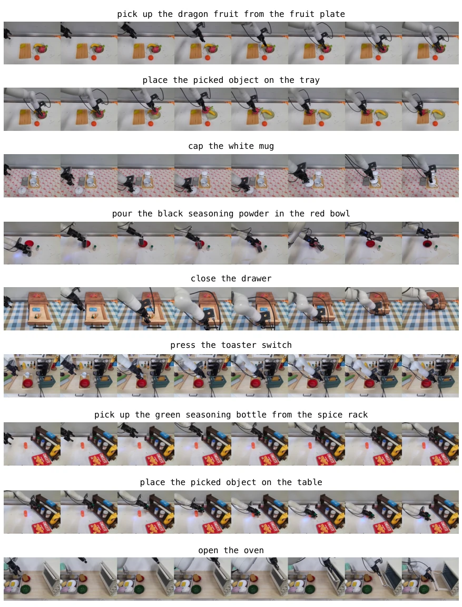
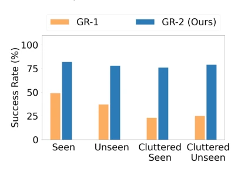

As an upgraded version of GR-1, GR-2 indeed demonstrates ByteDance's "money power" in terms of data. 38 million network video pre-training, 50 billion tokens, this data volume is rare in the robotics community. The model performance is indeed impressive, 100+ tasks with 97.7% success rate, sounds like a sci-fi movie. But do not celebrate too early, Unseen Manipulation is only 55.8%, indicating "generalization" is not fully generalized yet, still prone to failure when encountering unseen objects. Using video generation as a planner is a clever idea, using a world model to assist action prediction adds a layer of "imagination" compared to pure end-to-end action prediction. However, real deployment still relies on the WBC algorithm for backup, indicating end-to-end control is not fully solved yet. Overall, this is a large-scale validation of the VLA route, proving that data scale can indeed exchange for performance, but there is still a distance from the true "universal robot", after all, video generation still has limitations in simulating physical dynamics.
The biggest pain point in robot learning is data scarcity and high cost. Collecting data with real robots has low efficiency and is difficult to scale [15]. Although foundation models are successful in NLP and image domains, there is still a gap when transferring to robot manipulation. Existing work such as RT-1 [15] relies on large amounts of robot data, while GR-1 [5] attempts video pre-training, but data volume is only 0.8M. GR-2 aims to solve data scarcity and generalization problems, utilizing rich physical dynamic knowledge contained in internet videos, allowing the model to understand how the world evolves with text descriptions through large-scale pre-training, thereby reducing dependence on robot trajectory data. Meanwhile, facing long-horizon task benchmarks such as CALVIN [21], existing methods perform poorly in unseen scenarios, GR-2 hopes to enhance planning and reasoning through video generation capabilities, achieve more general manipulation strategies, and reduce overfitting to specific environment data.

Figure 2: Pre-training Dataset. We show sample videos and the verb distribution of the pre-training dataset we curated. The y-axis of the bottom plot is the logarithm frequency of the top words.
GR-2 adopts a two-stage training paradigm. The first stage is video generation pre-training, input text and frames, predict subsequent frames, using VQGAN to convert images into discrete tokens, text uses frozen encoder. This stage allows the model to learn physical common sense. VQGAN remains frozen during pre-training and fine-tuning, accelerating training and ensuring video quality. The second stage is robot data fine-tuning, input multi-view video, state and instructions, simultaneously predict future video and action trajectories. Actions are generated using cVAE, ensuring smoothness. Model architecture is based on GPT-style Transformer, supporting multi-view input. During real deployment, GR-2 outputs Cartesian space trajectories, optimized and converted to joint commands through Whole-Body Control (WBC) algorithm, frequency 200Hz, handling collision constraints. WBC algorithm integrates collision constraints and manipulability optimization. This design treats video generation as an auxiliary for action prediction, using visual prediction consistency to constrain actions, improving strategy robustness, enabling the model to better handle geometric properties of unseen objects.

Figure 1: Overview. GR-2 undegoes two stages of training: video generation pre-training and robot data fine-tuning.
Experiments cover multi-task learning, end-to-end bin packing, and CALVIN benchmark. Multi-task learning involves 105 tasks, 8 skills, simple scene success rate 97.7%, significantly improved in unseen background and environment scenarios (about 71%). Packing task handles 122 objects, success rate 79.0% in unseen objects and cluttered scenarios, far exceeding GR-1. On CALVIN benchmark, long-horizon task average completion length reaches 4.64, better than RT-1 and other baselines. Ablation shows data augmentation and model scaling are effective, parameters increased from 30M to 719M, success rate improves with scale. But on unseen manipulation tasks only 55.8%, exposing generalization bottlenecks for new object shapes and instructions.

Figure 3: Multi-Task Learning. We perform experiments in two basic settings (Simple and Distractor) and three generalization settings (Unseen Backgrounds, Unseen Environments, and Unseen Manipulation).

Figure 4: Task Examples. GR-2 is able to perform more than 100 tasks of 8 skills including picking, placing, uncapping, capping, opening, closing, pressing, and pouring.

Figure 6: Success Rates of Multi-Task Learning. We show the success rates of four models across different evaluation settings. 400 (50) indicates that the model is trained on about 400 (50) trajectories per task on average. GR-2 w/ DA indicates that we perform data augmentation on the training data. See Sec. 3.1 for more details.

Figure 7: End-to-End Bin Picking. (a) Experiment setting. (b) Objects used in the experiments. We evaluate in four different settings: (c) Seen, (d) Unseen, (e) Cluttered Seen, and (f) Cluttered Unseen. Seen (Unseen) indicates that the objects are seen (unseen) during training. The two cluttered settings (e) and (f) have more objects compared to the training setting.

Figure 8: Qualitative Results of End-to-End Bin Picking. We show end-to-end picking of different objects, including objects that are transparent, deformable, or reflective.

Figure 10: CALVIN Benchmark Results. We show the success rates of completing 1, 2, 3, 4, and 5 tasks in a row and the average length. The average length shows the average number of tasks the robot is able to accomplish when instructed to perform 5 tasks in a row.
其他图片Other Figures

Figure 5: Qualitative Results of Multi-Task Learning. We show end-to-end rollouts of different tasks.

Figure 9: Success Rates of End-to-End Bin Pick- ing.